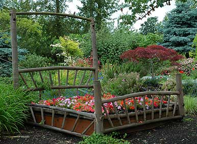
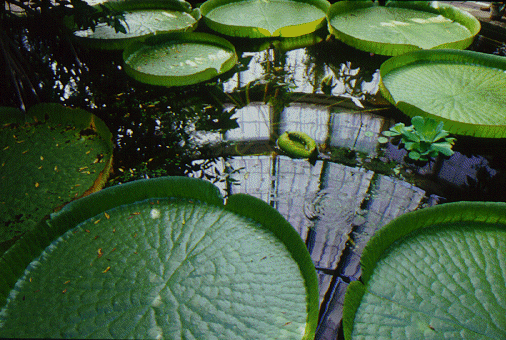
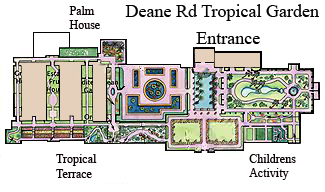

Deane Rd Tropical Garden Centre is a place for the whole family to relax and enjoy the beauty. If you want to view amazing natural tropical plants, come along!
Whether you are an avid gardener or that you just enjoy nature, we are certain that you will be amazed at the plender of the garden. The centre has a selection of 3000 plants from outdoor to indoor species. We have 10 individually cultivated green house structures. Our outdoor areas include some of the most beautiful water lillies, set in an idyllic garden. |
 |
|  | You too can have these wonderous Water Lillies in your Pond. |
Lose yourself in the walled garden and take in the various scents of the flowering plants. If your'e lucky and the sun is shinning rest on one of our many benches and enjoy the relaxing atmosphere.
| |
 |
A leisurely walk around the entire garden could take a hour and a half. Our detailed map shows the many different areas to view.